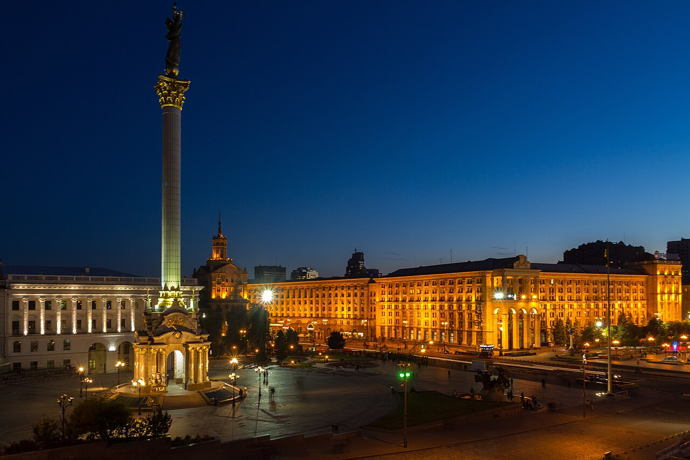

Рудь Станіслав Сергійович
Народився 17 вересня 2007 року в місті Первомайськ Миколаївської області.
Закінчив Первомайський ліцей «Лідер». Зараз навчаюсь у Національному технічному університеті України «Київський політехнічний інститут імені Ігоря Сікорського» на факультеті інформатики та обчислювальної техніки, група ІП-44.
Мої хобі
- Тренування у спортзалі
- Програмування та веброзробка
- Комп'ютерні ігри
Улюблені фільми
- «Легенда» (2015)
- «Інтерстеллар» (2014)
- «Темний лицар» (2008)
Найулюбленіше місто — Київ
Київ — столиця України та одне з найдавніших міст Східної Європи, якому понад півтори тисячі років. Мені найбільше подобаються золоті бані Києво-Печерської лаври та Михайлівського собору, Хрещатик і Майдан Незалежності, вечірні прогулянки набережною Дніпра та краєвиди з Володимирської гірки. Тут я навчаюсь, і місто щодня відкривається для мене з нового боку.
